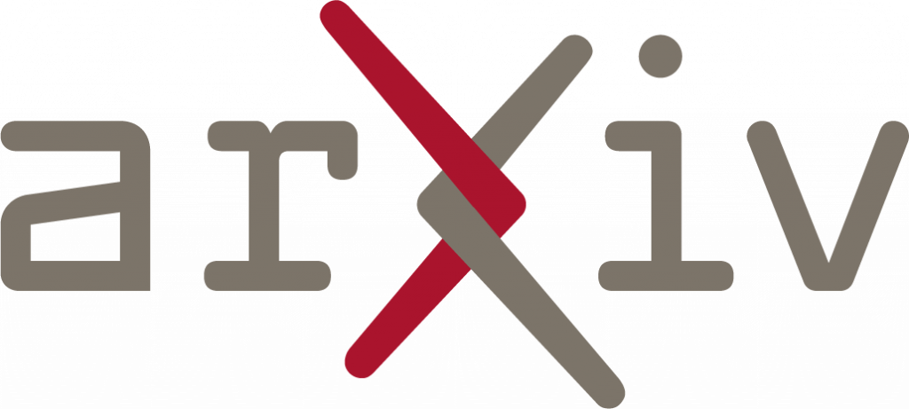

Raphaël Tinarrageraphael.tinarrage[at]fgv.br FGV EMAp, Praia de Botafogo, nº190
|
 |
|  |
Postdoc at FGV EMAp, advised by César Camacho.
Former PhD Student at Laboratoire de Mathématiques d'Orsay and Inria, advised by Frédéric Chazal and Marc Glisse.
Here is my curriculum vitae and a list of publications.
Research
On the theoretical side, my research interests include persistent homology, varifolds theory and combinatorics of simplicial complexes.
|
|
Simplicial approximation to CW complexes in practice. Under Review. We study an algorithm which converts CW complexes into simplicial complexes. We obtain a potential triangulation of the Grassmannian of planes in dimension 4. |
|
|||
|
|
Computing persistent Stiefel-Whitney classes of line bundles. Published in JACT'21. We define and study characteristic classes within the framework of persistent homology. We define an algorithm which estimates the orientability of datasets. |
|
|||
|
|
Recovering the homology of immersed manifolds. Published in DCG'23. We adapt persistent homology to the case of point clouds sampled on a self-intersecting manifold. We deduce a self-intersection-aware clustering algorithm. |
|
|||
|
DTM-based filtrations, with H. Anai, F. Chazal, M. Glisse, Y. Ike, H. Inakoshi, and Y. Umeda. Published in Abel Symposium'18 and SoCG'19. We define filtrations for persistent homology that are robust to noise and anomalous points. |
|
I also work on concrete applications of Topological Data Analysis and machine learning.
|
|
TDANetVis: Suggesting temporal resolutions for graph visualization using zigzag persistent homology, with Jean Ponciano, Claudio Linhares, Agma Traina and Jorge Poco. Preprint. A parameter-suggestion and interactive visualization tool for large dynamic graphs. |
|
||
|
O impacto da Súmula Vinculante 26 na diminuição de demanda similar no STF: uma análise quantitativa por modelos de machine learning. Conference article presented at XI Encontro Internacional do CONPEDI. A comparison of NLP methods for the automatic classification of law documents (in Portuguese). |
|
|||
|
|
Progressão de regime em crimes hediondos no Supremo Tribunal Federal: uma análise empírica pela Súmula Vinculante 26. Conference article presented at XI Encontro Internacional do CONPEDI. An empirical analysis of Brazilian Supreme Court’s SV 26 with respect to regime progression (in Portuguese). |
|
My PhD thesis can be found here:
|
Topological inference from measures and vector bundles. PhD dissertation, defended at Laboratoire de Mathématique d'Orsay the 12th of October, 2020. Slides and reports |
|
Code
My work is implemented in the package velour for Python. It can be downloaded via PyPI or GitHub.
Teaching
At FGV EMAp, I gave two summer courses:
|
|
2023, General and Combinatorial Topology. 3rd year graduation course. More information on the course page. |
|
||
|
2021, Topological Data Analysis with Persistent Homology. 3rd year graduation course. More information on the course page. |
|
At Université Paris-Sud, I was assistant professor for the following courses:
| 2017-2019 | M257, TD Equations différentielles ordinaires, L2 Biologie-Chimie. More information here. |
| 2017-2020 | M331, TP Inférence statistique, L3 MINT. |
| 2017-2020 | M326, TD Projet modélisation et calcul scientifique, L3 MINT. |
Talks and posters
| 26 Jan 2023 |
|
FGV Rio, Summer School on Data Science, TDA Minicourse III: Persistent Homology |
| 26 Jan 2023 |
|
FGV Rio, Summer School on Data Science, TDA Minicourse II: Homological inference |
| 25 Jan 2023 |
|
FGV Rio, Summer School on Data Science, TDA Minicourse I: From Topology to Data Analysis |
| 19 Jan 2023 |
|
FGV Rio, Workshop On Legal Digital Intelligence, TDA and Súmulas Vinculantes |
| 24 Nov 2022 |
|
USP São Carlos, ICMC Seminário, Análise Topológica de Dados e suas aplicações |
| 21 Nov 2022 |
|
USP São Carlos, ICMC Seminário, TDA pra escolha de resolução temporal na visualização de grafos |
| 14 Sept 2022 | Santiago, XI Encontro do CONPEDI, O impacto da SV 26 na diminuição de demanda similar no STF | |
| 13 Sept 2022 | Santiago, XI Encontro do CONPEDI, Progressão de regime em crimes hediondos no STF | |
| June 2022 | Mathematical Institute Oxford, ATMCS, Simplicial approximation to CW-complexes in practice | |
| 8 June 2021 |
| Online, SoCG Minisymposium Comp. Top., Simplicial approximation to CW-complexes in practice |
| 9 June 2021 |
| Online, EMINES, Analyse Topologique des Données II : Homologie persistante |
| 26 May 2021 |
| Online, EMINES, Analyse Topologique des Données I : Invariants topologiques |
| April 2021 | FGV Rio, EMAp Seminário, Topological inference in TDA II: Persistence barcodes | |
| April 2021 | FGV Rio, EMAp Seminário, Topological inference in TDA I: Topology in datasets | |
| Dec 2020 | Applied Algebraic Topology Network, Persistent Stiefel-Whitney classes | |
| Dec 2020 | UMPA Lyon, Séminaire EDP Modélisation, Inférence topologique avec l'homologie persistante | |
| Nov 2020 | Online, EPFL Applied Topology Seminar, Persistent Stiefel-Whitney classes | |
| Oct 2020 | Orsay LMO Univ. Paris-Sud, PhD Defense, Topological inference from measures and vector bundles | |
| June 2020 | Online, Symposium of Computational Geometry, Recovering the homology of immersed manifolds | |
| May 2020 | LMO Orsay, Séminaire informel, Introduction à l'homologie persistante | |
| Mar 2020 | Inria Saclay, Datashape seminar, Introduction aux classes de Stiefel-Whitney | |
| Oct 2019 | Inria Saclay, Datashape seminar, Recovering the homology of immersed manifolds | |
| June 2019 | Portland, Symposium on Computational Geometry, DTM-based filtrations | |
| June 2018 | IST Austria, Algebraic Topology: Methods, Computation and Science, DTM-based filtrations |
Misc.
|
I used to conduct the MATh.en.JEANS workshop |